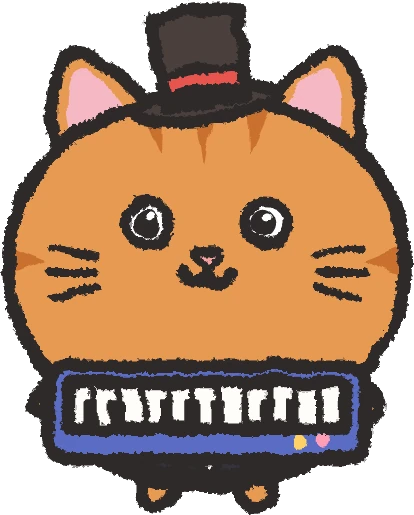
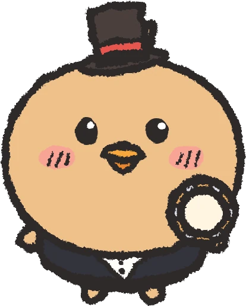

ふらっと音楽隊
ひとりで録音、
メロディ・コード・ベース・リズム・うた。パートを1つずつ録音して重ねていくと、自分だけのバンドの演奏ができあがります。ドレミつきの楽譜と光る鍵盤で、楽譜が読めなくても大丈夫。
PLAYあそび
合奏・練習・おけいこ・作曲。
ひとりで合奏をつくろう
曲を選んで、パートごとに楽器を決めて録音。録ったパートは伴奏として流れるので、次のパートはそれに合わせて弾くだけです。ピアノ・木琴・リコーダー・ギター・ドラムなど50種類以上の楽器と、マイクで録る「うた」のパートがあります。
- メロディまずは
主旋律を録音 
コード和音でひびきを足す - ベースメロディを
聴きながら - リズムたいこで
ノリをつける - うたマイクで
歌声を重ねる
重ねると、
楽譜が読めなくても
音符にドレミの名前がつく楽譜と、次に弾く鍵盤が光る表示。好きな小節を選んで、お手本を聴く → なぞる → いっしょに弾く、の順で少しずつ練習できます。速さも変えられます。


やさしい順にステップアップ
1本の指で弾くコースから、両手で弾くコースへ。新しい音符やコードを1つずつ覚えながら、短い練習曲から仕上げの曲へ進みます。相棒のお手本をまねする「ききまね」で、耳と手をいっしょに育てます。

自分だけの曲をつくろう
シートに音を並べるだけで作曲できます。コードは自動でつけることもできます。作った曲は合奏や練習でも使えます。

なかよしの相棒といっしょ
いっしょに遊ぶ動物の「あいぼう」と出会えます。服や飾りを着せかえたり、自分のアバターをパーツを組み合わせて作ったりできます。

あいぼうたちの庭を飾ろう
あいぼうたちが暮らす「ひろば」に、木や家、楽器を置いて飾れます。押すと鳴る物や、ミニコンサートを開けるステージもあります。

SONGS収録曲と楽器
きらきらぼし、ジングルベル、ふるさと、
FOR PARENTS保護者の方へ
お子さまに安心して渡せるよう、
- 広告なしアプリの中に広告は出ません。
- データの
収集なし 録音した声・作った曲・読み取りに使った写真は端末の中だけで扱い、外部へ送りません。 - 登録・
ログイン不要 アカウントを作らずに遊べます。 - 買い切り
1回だけ 無料で一部を遊べます。すべて遊ぶには1回だけの購入が必要で、購入の前に保護者の確認があります。 - コインは
お金で買えない アプリの中のコインは遊んでもらえるもので、見た目のアイテムとだけ交換できます。
| 無料で遊べる | 一部の曲と楽器、おけいこ の「いっぽんゆび」のすべてと「りょうて」の最初の4レッスン、作った曲の保存2曲まで、合奏の保存3つまで |
|---|---|
| 購入すると | すべての曲・楽器・レッスンを遊べます (アプリ内課金・買い切り) |
SUPPORTサポート
よくある質問
機種変更や入れ直しのあと、購入した内容を戻すには？
購入したときと同じ Google アカウントでアプリを入れ、「せってい」の「アプリ」から「ぜんぶ あそべる ばんに する」を押し、保護者の確認のあとに「購入を復元する」を押してください。
作った曲や録音は、ほかの端末に移せますか？
作った曲・録音・あいぼう などは端末の中だけに保存しているため、いまはほかの端末へ移す機能はありません。アプリを削除すると消えてしまうのでご注意ください。
電子ピアノや MIDI キーボードはつなげますか？
USB でつないだ MIDI キーボード・電子ピアノで弾けます。端末によっては変換アダプターが必要です。
うたのパートでマイクを使うのはなぜですか？
うたのパートで歌声を録音するためです。録音した声は端末の中だけに保存され、外部へ送られることはありません。マイクを許可しなくても、うた以外のあそびはすべて使えます。
お問い合わせ
ご質問・不具合のご報告は、こちらのメールまでお寄せください。お使いの端末の機種名と、どの画面で何が起きたかを書いていただけると助かります。
furattoband.support@gmail.com